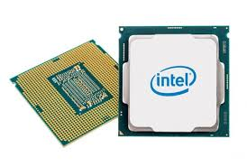

Cuando se habla de componentes de computadora, una de las primeras mejoras que se puede hacer es la memoria RAM. Aumentar la cantidad de RAM en una computadora permite que el sistema maneje más tareas a la vez sin volverse lento. Esto es especialmente útil para quienes utilizan aplicaciones pesadas o realizan múltiples tareas, como editar videos o jugar videojuegos. Con más RAM, la fluidez y el rendimiento general del equipo mejoran notablemente.
Otro componente clave es el procesador, que se encarga de ejecutar las instrucciones de los programas. Un procesador más rápido y moderno puede mejorar significativamente la velocidad de la computadora. Esto significa que las aplicaciones se abrirán más rápido y se ejecutarán con mayor eficiencia. Al considerar una mejora, invertir en un buen procesador puede ser una de las decisiones más efectivas para optimizar el rendimiento de la máquina.
Finalmente, la tarjeta gráfica es esencial, especialmente para los gamers y quienes trabajan en diseño gráfico. Una tarjeta gráfica potente permite una mejor calidad de imagen y un rendimiento más fluido en los juegos. Además, ayuda en tareas de edición de video y creación de contenido visual. Mejorar la tarjeta gráfica puede transformar la experiencia de usuario, permitiendo disfrutar de gráficos más detallados y una jugabilidad más inmersiva.